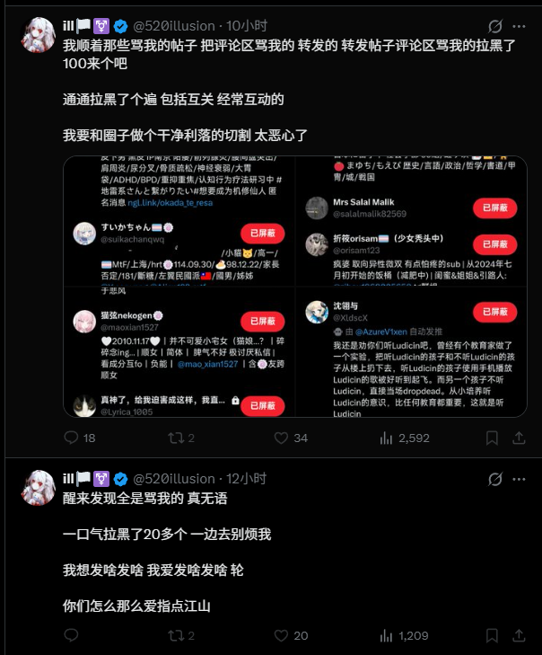
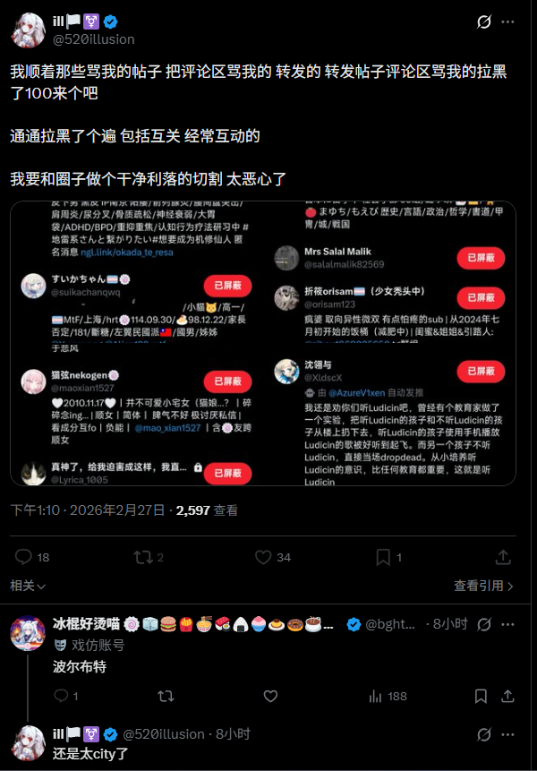

冰棍好烫喵 🍥🧊🍔🍟🍜🍣🍙🍧🍮🍩☕️💊🤤
@bghtnya
@maoxian1527 @itsCatRoll 为了恰窝的流量 而且它还需要蓝标互fo


英酱猫猫🍥
@SakurabaEma_ITN
你们猜猜为什么这个人不b冰棍 明明她说什么骂她的都b了（图1）（图2）
因为冰棍的fo很多而且有蓝标
此人曾经和唐说有蓝标就fo 这里可以猜测出它的意图就是所谓的蓝标互fo来提升流量 然而连唐也不理她
所以可以看出这就是一个完全为了流量，不要脸，没有原则的炒作狗
原本我很不想用任何攻击性词语的 https://t.co/FaNnxqhSOZ https://t.co/WQlI8jQSKM
猫弦nekogen🍥
@maoxian1527
@bghtnya @itsCatRoll ill